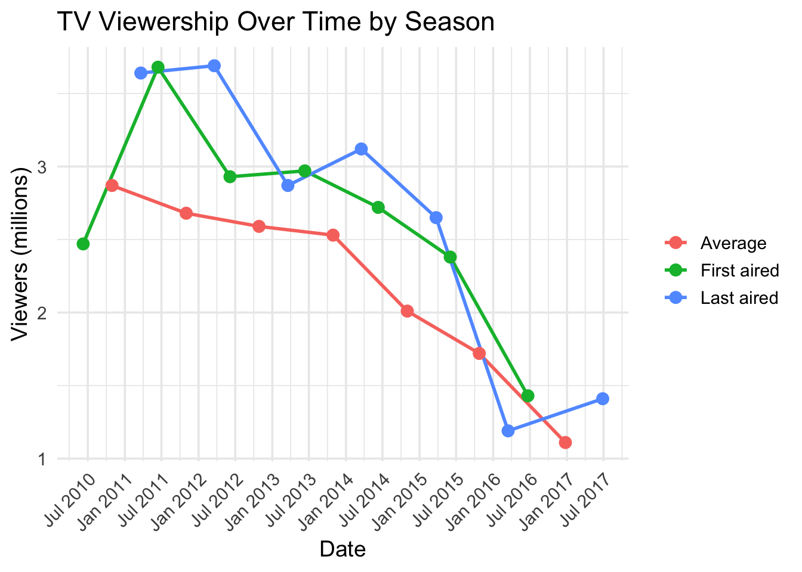
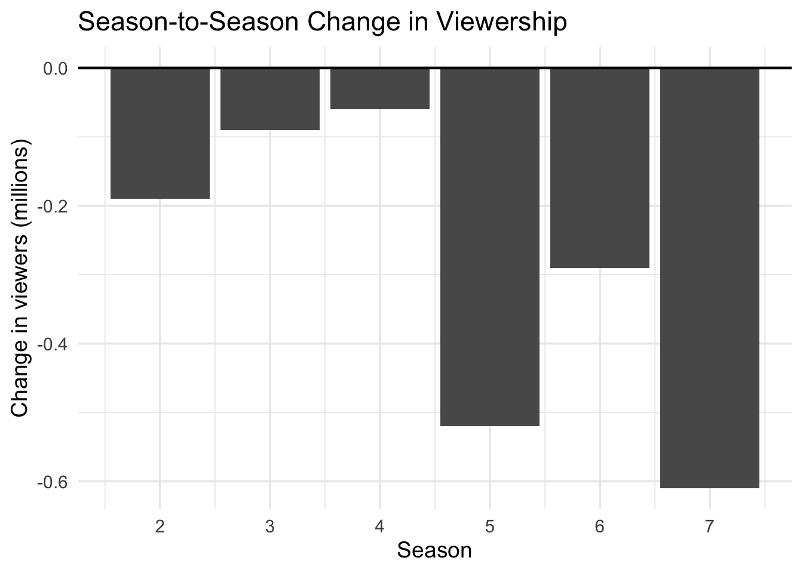

| DVD and Blu-ray release dates | |||
|---|---|---|---|
| Region 1 | Region 2 | Region 4 | |
| 1 | June 7, 2011 | September 24, 2012 | November 2, 2011 |
| 2 | June 5, 2012 | November 11, 2013 | October 3, 2012 |
| 3 | June 4, 2013 | April 21, 2014 | June 19, 2013 |
| 4 | June 3, 2014 | September 29, 2014 | July 9, 2014 |
| 5 | June 2, 2015 | July 15, 2015 | July 8, 2015 |
| 6 | April 19, 2016 | April 18, 2016 | April 20, 2016 |
| 7 | July 25, 2017 | TBA | July 26, 2017 |
| All seasons | July 25, 2017 | July 24, 2017 | July 26, 2017 |
Assignment
Pretty Little Liars
Pretty Little Liars is an American teen drama mystery thriller television series created by I. Marlene King, which aired on Freeform from June 8, 2010, to June 27, 2017, based on the novel series of the same name written by Sara Shepard, lasting 160 episodes over seven seasons. Set in the fictional Rosewood, Pennsylvania, the plot follows five best friends whose secrets are consistently threatened by the anonymous “A”, who begins harassing them after the disappearance of their clique leader.
Broadcast
Pretty Little Liars premiered on June 8, 2010, in the United States, becoming ABC Family’s highest-rated series debut on record across the network’s target demographics. It ranked number one in key 12–34 demos and teens, becoming the number-one scripted show in Women 18–34, and Women 18–49. The premiere was number two in the hour for total viewers, which generated 2.47 million unique viewers, and was ABC Family’s best delivery in the time slot since the premiere of The Secret Life of the American Teenager.
he second episode retained 100% of its premiere audience with 2.48 million viewers, despite the usual downward trend following a premiere of a show, and built on its premiere audience. It was the dominant number one of its time slot in Adults 18–49, and the number one show in female teens. Subsequent episodes fluctuated between 2.09 and 2.74 million viewers.The August 10, 2010, “Summer Finale” episode drew an impressive 3.07 million viewers.
On June 28, 2010, ABC Family ordered 12 more episodes of the show, bringing its total first-season order to 22.[97] On January 10, 2011, ABC Family picked the show up for a second season that premiered on June 14, 2011. During the summer of 2011, Pretty Little Liars was basic cable’s top scripted series in women aged 18–34 and viewers 12–34.The second half of season 2 aired on Mondays at 8/7c, beginning on January 2, 2012.
On November 29, 2011, ABC Family renewed the show for a third season, which consisted of 24 episodes. On October 4, 2012, ABC Family announced that the show was renewed for a fourth season, again comprising 24 episodes. The second half of the third season began airing on January 8, 2013, and finished on March 19, 2013. Pretty Little Liars returned for Season 4 on June 11, 2013. On March 26, 2013, it was again announced that Pretty Little Liars had been renewed for a fifth season scheduled for a 2014 air date and a new spin off show entitled Ravenswood would begin airing after the season four annual Halloween special in October 2013. The second half of season four premiered on January 7, 2014. It was announced on June 10, 2014, that Pretty Little Liars was renewed for two seasons, making the show ABC Family’s longest running original hit series.On August 29, 2016, I. Marlene King announced that Pretty Little Liars would be ending after the seventh season had aired. The second half of the seventh season began airing in April compared to January in the previous season.
Viewership over time

Season-to-season change

The viewership shows a clear downward trend over time, with only minor fluctuations in the earlier seasons. After a small drop of about 0.19 million from season 1 to 2, the decline continues more gradually through seasons 3 and 4 (around 0.09 and 0.06 million, respectively). A more pronounced decrease occurs between seasons 4 and 5, where viewership drops by approximately 0.52 million, marking the largest single-season decline up to that point. The downward trend continues with a further decrease of about 0.29 million from season 5 to 6. The most significant drop happens between seasons 6 and 7, where viewership falls by roughly 0.61 million. Overall, the data indicates a steady loss of audience over time, with sharper declines in the later seasons compared to the relatively stable early period.